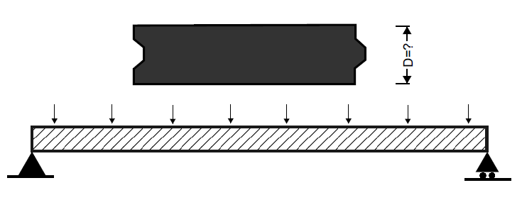

Magnel diagram is plotted
Equations referred to the first tab
Following four lines are obtained from Eq (1)-(4) for the load at mid-span
If the checkbox is ticked, two additional lines are plotted from from Eq (1), (2) for the load at the end
You can change the depth of the plank to see how the diagram changes
You can choose a pair of (\( P _{i} ,\; e \)) to see if it is in the acceptable area
Use the \( P _{i} \) and \( e \) in the previous tab as input:
Based on the calculation in the previous three tabs, your final answer for \( D \), \( P _{i} \) and \( e \) are: